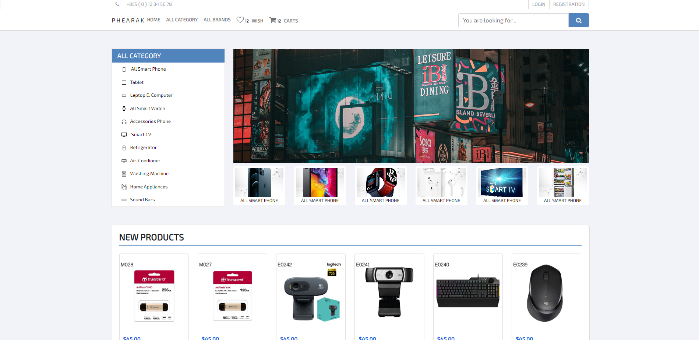
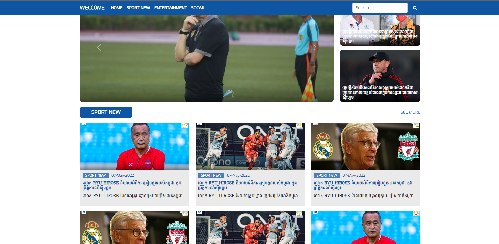

<main class="main-main mb-20">
    <div class="max-w-8xl mx-auto">
        <section>
            <h1 data-aos="fade-down" class="text-center" style="font-size: 30px;"><b>PROJECTS</b></h1>
            <div data-aos="fade-down" class="border-b border-2 my-7 mx-auto border-sky-700" style="width: 80px;"></div>
        </section>


        <section class="bg-white p-5 rounded-md shadow-md">
            <div class="block lg:flex justify-between items-center">
                <div>
                    <b>LASTEST</b>
                    <p class="text-gray-700">Most recently added to my collection.</p>
                </div>
                <div>
                    <select style="width: 200px;" id="country" name="country" autocomplete="country-name" class="rounded-md border border-gray-300 bg-white py-2 px-3 shadow-sm focus:border-indigo-500 focus:outline-none focus:ring-indigo-500">
                        <option selected>Type of Projects</option>
                        <option>E Commerce</option>
                        <option>Admin</option>
                        <option>Blog</option>
                    </select>
                    &nbsp;
                    <button class=" rounded-md border border-gray-300 bg-white py-2 px-3 shadow-sm focus:border-indigo-500 focus:outline-none focus:ring-indigo-500 sm:text-sm">View All</button>
                </div>
            </div>
            <div class="border-b-2 border-gray-100 my-5"></div>

            <div class="grid grid-cols-1 lg:grid-cols-2 gap-6 mt-3">
                <div>
                    <div class="drop-shadow-lg">
                        <div class="overflow-hidden relative thumbnail-container">
                            
                            <a target="_blank" href="https://yanphearak.github.io/phone/"><button class="absolute bottom-0 -right-40 about-home text-white bg-sky-700 hover:bg-blue-800 focus:outline-none focus:ring-4 focus:ring-blue-300 font-medium rounded-md text-sm px-5 py-2.5 text-center mr-2 mb-2 shadow-lg">Preview <i class="bi bi-chevron-right"></i></button></a>
                        </div>
                        <b class="block mt-4 text-gray-700">Phearak - Phone Shop Template</b>
                        <p class="text-gray-600">Ecommerce</p>
                    </div>
                </div>
                <div>
                    <div class="drop-shadow-lg">
                        <div class="overflow-hidden relative thumbnail-container">
                            
                            <a target="_blank" href="https://yanphearak.github.io/sport/"><button class="absolute bottom-0 -right-40 about-home text-white bg-sky-700 hover:bg-blue-800 focus:outline-none focus:ring-4 focus:ring-blue-300 font-medium rounded-md text-sm px-5 py-2.5 text-center mr-2 mb-2 shadow-lg">Preview <i class="bi bi-chevron-right"></i></button></a>
                        </div>
                        <b class="block mt-4 text-gray-700">Sport - Sport News Template</b>
                        <p class="text-gray-600">Blog</p>
                    </div>
                </div>
            </div>
        </section>

    </div>
</main>
